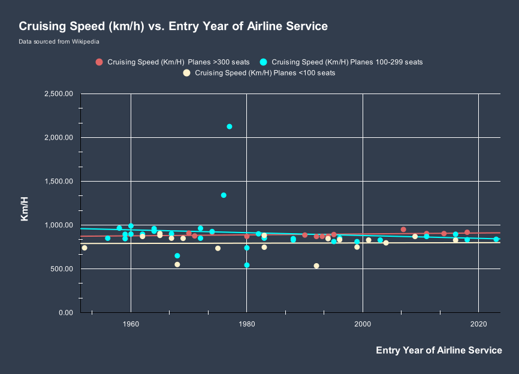
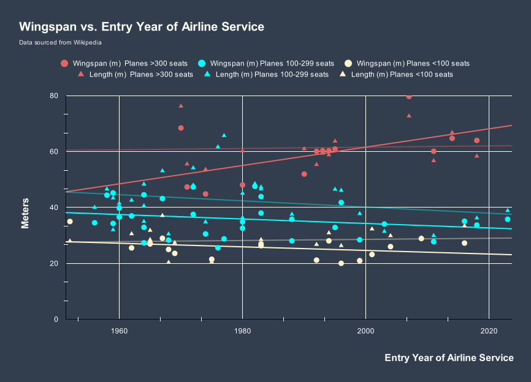
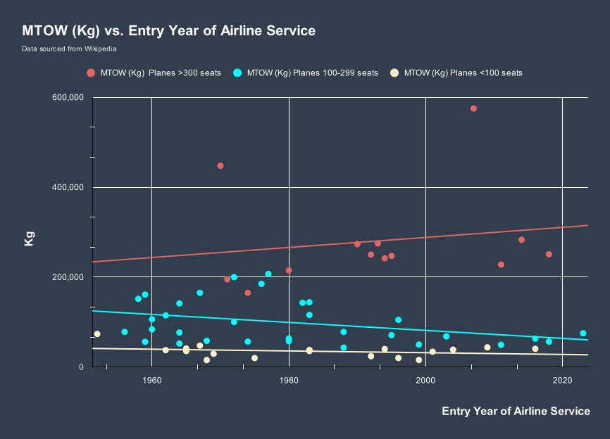
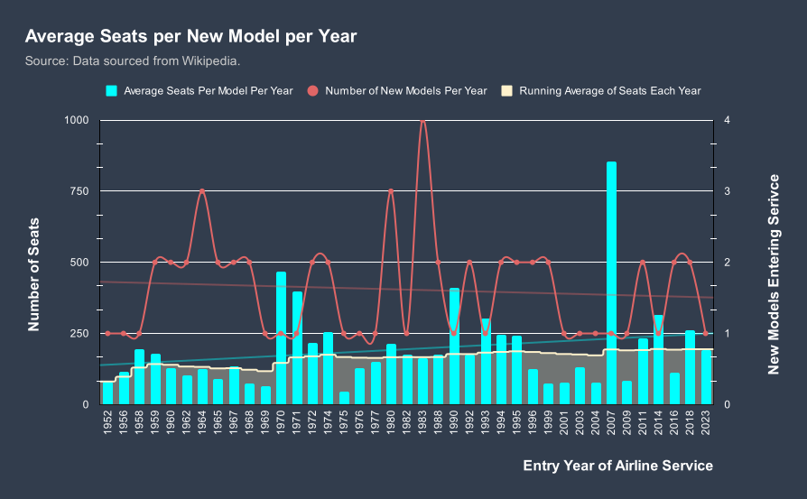
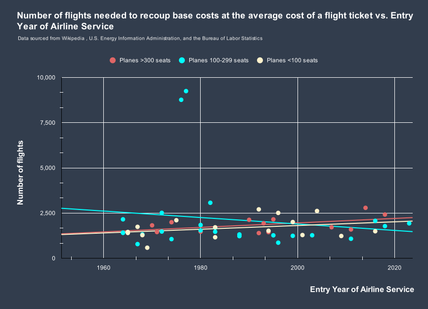
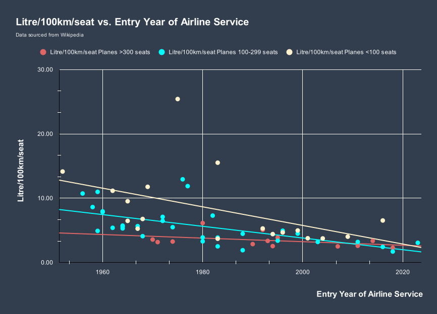

How have Jets changed?
In the 70 years since the start of the commercial "Jet Age", jetliners have changed — although not always in the ways one might expect.
We tend to think of new technology being inherently faster than things built in the past, but the cruising speed of jets hasn't changed much. In fact the cruising speed of 80 percent of commercial jets built since 1952 falls within 1/2 a standard deviation of the average. When you control for aircraft size, some changes are more evident — especially for larger planes, but overall jets aren't flying that much faster than they use to.
Part of why may have to do with the end of super-sonic travel. Two planes — the Tupolev Tu-144 and Aérospatiale-BAC Concorde were the first commercial supersonic jets. However, after a series of accidents, the jet industry moved away from supersonic technology.
We tend to think of new technology being inherently faster than things built in the past, but the cruising speed of jets hasn't changed much. In fact the cruising speed of 80 percent of commercial jets built since 1952 falls within 1/2 a standard deviation of the average. When you control for aircraft size, some changes are more evident — especially for larger planes, but overall jets aren't flying that much faster than they use to.
Part of why may have to do with the end of super-sonic travel. Two planes — the Tupolev Tu-144 and Aérospatiale-BAC Concorde were the first commercial supersonic jets. However, after a series of accidents, the jet industry moved away from supersonic technology.
Depending on how many passengers a plane can carry — as a proxy for whether it was designed for long-haul, medium-haul, or regional flights — jets have followed several trends that seem to indicate increased specialization in design.


While jet cruising speed across plane size has remained pretty constant, planes with more than 300 seats have undergone a noticeable increase in their wingspan and length. This — as well as the increase in the maximum take off weight of these types of jet — suggest that jets optimized for long-haul flights are getting more powerful and capable of flying further overtime.


Yet these changes seem to be restricted to planes with more than 300 seats and so say very little about industry-wide trends. In fact, both planes with between 100 — 299 seats and planes with less than 100 seats seem to have gotten less powerful and smaller overall.
Interestingly, the number of flights needed to recoup the cost of a new plane has also remained relatively constant, suggesting that the ratio between plane seating, ticket price, and aircraft price have remained balanced over the past 70 years.
Interestingly, the number of flights needed to recoup the cost of a new plane has also remained relatively constant, suggesting that the ratio between plane seating, ticket price, and aircraft price have remained balanced over the past 70 years.
However, when you look at the costs associated with modern jets, it becomes apparent that there is one area specifically in which all types of planes have been optimized: fuel efficiency.


Regardless of size or purpose, jets today are more fuel efficient than at any point in their history. This — more than increased distance, size, capacity, or power — seems to be where the industry is headed.
How Far Can They Fly?
Today, in many ways jets have stagnated. Of the 5 commercial jets with the largest maximum range, the average year they entered service is 2004 and only two companies — Airbus and Boeing — are represented.
Maximum Flying Distance of the Five Commercial Jet Planes with the Longest Ranges
Distance in Kilometers from JFK Airport, New York City, New York, USA
How Much Can They Carry?
For the 5 commercial jets with the largest maximum additional take off weight (i.e. the difference between their maximum take off weight and their empty weight), the average year they entered service is 1995, though here three companies — Airbus, Boeing, and McDonnell Douglas — are represented.
Top Five Commercial Jet Planes by Maximum Additional Take Off Weight


Weight in US tons.